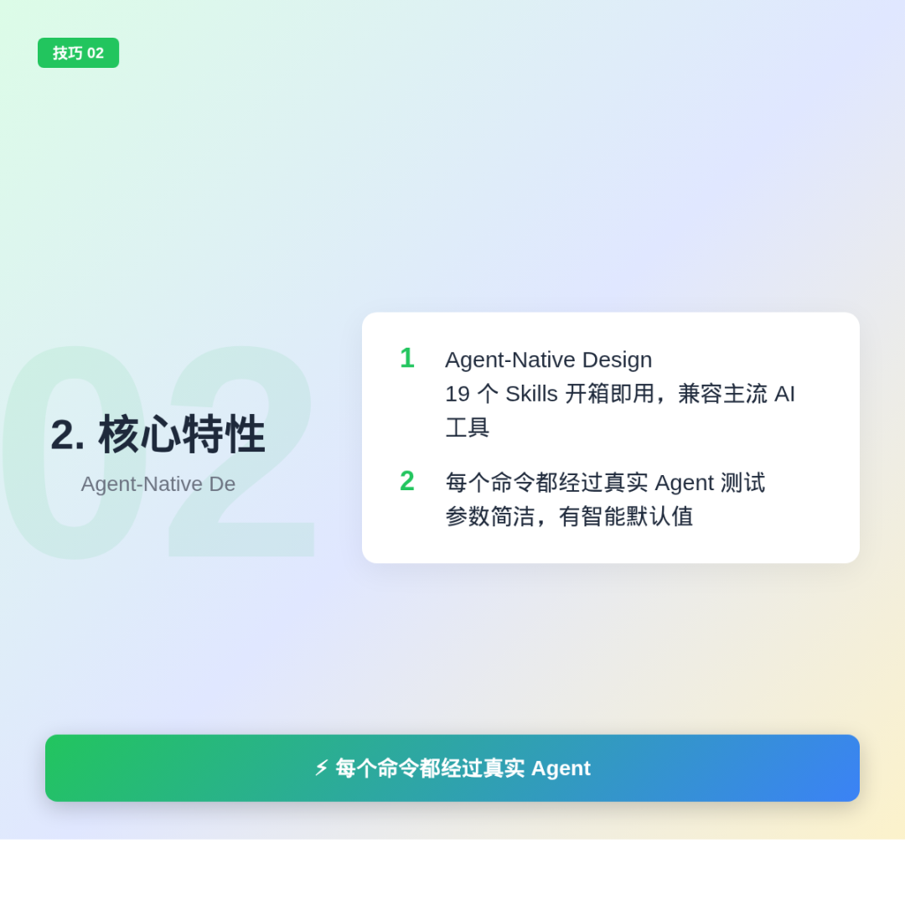
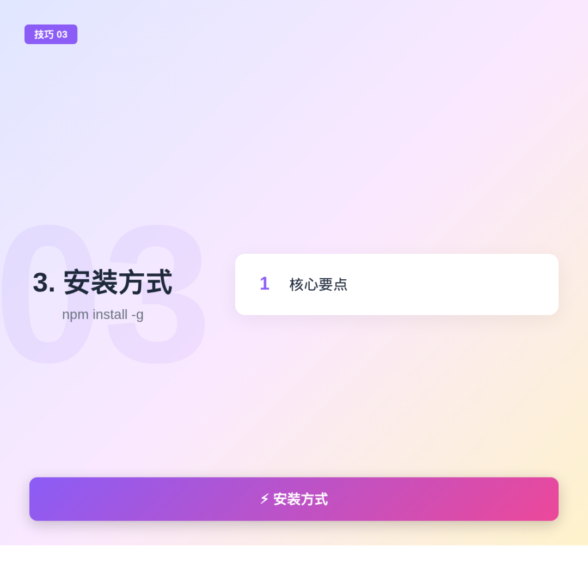
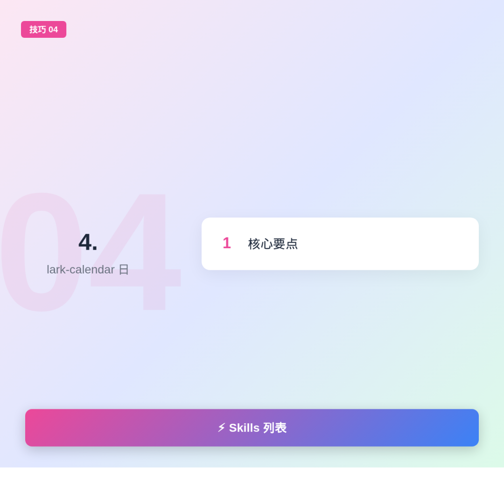

飞书开源了 CLI 工具，Agent 可以直接操作飞书了。收发消息、创建群、文档、多维表格，人能操作的以后都能交给 AI。软件 CLI 化是趋势，飞书这步操作很前卫，全面拥抱 AI。
1. 项目简介
飞书官方开源命令行工具，覆盖核心业务：日历、消息、文档、云盘、多维表格、表格、任务、知识库、通讯录、邮件、会议。
200+ 命令，19 个 AI Agent Skills。
2. 核心特性

Agent-Native Design，19 个 Skills 开箱即用，兼容主流 AI 工具。每个命令都经过真实 Agent 测试，参数简洁，有智能默认值。
三层架构：Shortcuts 带 + 前缀，API Commands 100+ 命令，Raw API 2500+ API。
3. 安装方式

npm install -g @larksuite/cli，然后 npx skills add larksuite/cli -y -g 安装 Skills。
配置凭证：lark-cli config init，登录：lark-cli auth login --recommend。
4. Skills 列表

lark-calendar 日历事件，lark-im 消息收发，lark-doc 文档操作，lark-drive 文件管理，lark-sheets 表格读写，lark-base 多维表格，lark-task 任务提醒，lark-mail 邮件，lark-contact 通讯录，lark-wiki 知识库。
还有 lark-event 事件订阅，lark-vc 会议记录，lark-minutes 会议纪要 AI，lark-whiteboard 白板。
5. 使用示例
查看日程：lark-cli calendar +agenda
发送消息：lark-cli im +messages-send --chat-id “oc_xxx” --text “Hello”
创建文档：lark-cli docs +create --title “周报” --markdown “# 进度”
切换身份：lark-cli calendar +agenda --as user 或 --as bot
6. 安全提醒
工具可被 AI Agent 自动调用，存在模型幻觉、不可预测执行、提示注入风险。建议用飞书机器人做私人助手，不要加群聊，不改默认安全设置。
用得越久，它越聪明——飞书 CLI 让 Agent 真正成为你的数字助手。